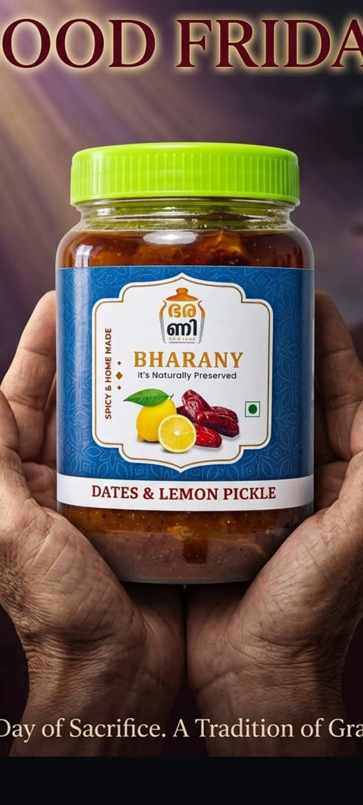
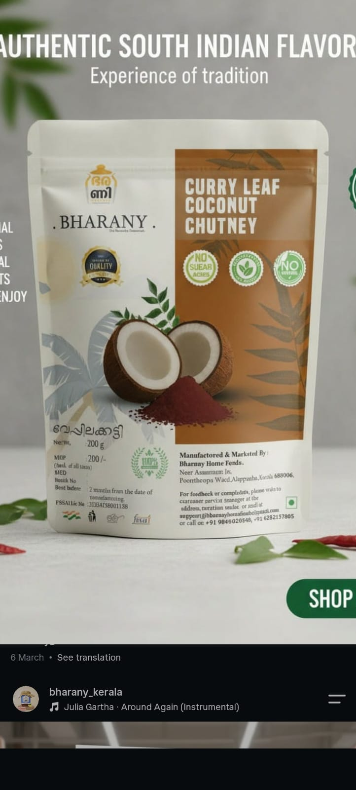

About us
Bharany means the traditional jar our grandmothers kept their pickles in. Every jar is still made by a mother, in her own kitchen, the way they did.
Pickles that taste like home, because they're made like home.
Bharany started with a simple idea: the pickles we grew up eating in Kerala were better than anything on a supermarket shelf, and more people deserved to taste them.
So we kept the recipes, the small batches and the patience. Fresh produce, spices roasted in oil, slow cooking, and nothing artificial. Then we put it in a jar with a hessian cap, so it looks like it came from a Kerala kitchen, because it did.
Today we make veg and non-veg pickles, from dates and lemon to prawns and beef, plus a small pantry range of Kerala coconut.
And we know who we're cooking for: Malayalis who've moved away. The student in a Bengaluru hostel living on mess food. The new hire in a Chennai PG who hasn't cooked a proper meal in weeks. The friends in a first flat with one pot, one rice cooker and a lot of homesickness. A spoon of the pickle you grew up with won't replace home, but it gets you a lot closer.
We cook in small quantities so every batch gets attention, and every jar tastes the way it should.
No sodium benzoate, no artificial colours or flavours. Salt, spice, oil and vinegar do the preserving, just as they always have.
Meat, fish and prawns are bought fresh and cooked the same day.
What's in the jar is on the jar. If you have a question about an ingredient or an allergy, ask us and you'll get a straight answer.
Every order comes through WhatsApp, to us. No call centres, no bots. If something isn't right, we fix it.



